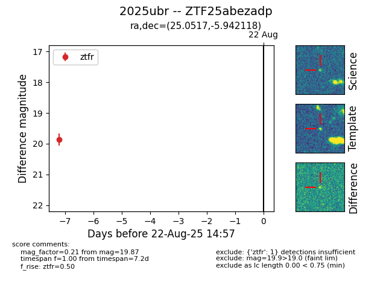

Target 2025ubr at 2025-08-22 14:57, see:
FINK: fink-portal.org/ZTF25abezadp
Lasair: lasair-ztf.lsst.ac.uk/objects/ZTF25abezadp
ALeRCE: alerce.online/object/ZTF25abezadp
TNS: wis-tns.org/object/2025ubr
YSE: ziggy.ucolick.org/yse/transient_detail/2025ubr
alt names
ZTF25abezadp (ztf,alerce)
2025ubr (tns,yse)
coordinates:
equatorial (ra, dec) = (25.0517,-5.94212)
galactic (l, b) = (153.8183,-65.84547)
photometry
last ztfr=19.87
1 ztfr detections
